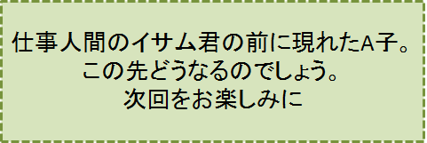

2センチの隙間-PART5-
『我が回想：A子は、何処へ？』の巻
笠原正雄
“えっ！ どうして？ 昨夜、元気一杯明るさ一杯で別れたのにどういうこと？”
胸騒ぎを覚えます。かつて経験したことのない程の大きな動揺が胸に迫ります。
“何かの勘違いで先に出掛けたのかも知れないなぁ”
ようやく、こんな言い訳を私自身に言い聞かせると、普段の倍以上のペースで大学へと急ぎます。
“講義室のいつもの最前列の席で待ってくれているに違いない”
このことを強く信じて舞学園大学の正門を飛ぶように走り抜けます。走って走って講義室に飛び込む私。
……僅かな期待空しく消えました。
講義室はがらんとして誰一人座っていません。全身の力が抜けてしまい、へなへなとくずおれるように、いつもの最前列の席に座ります。
“2講目3講目には教室に来るかも知れない”
こんな僅かな希望期待を胸に、A子を待ちましたけれど叶えられませんでした。
重い足を引きずって正門をくぐり家路につきます。
翌日の朝、ひょっとしたらという僅かな期待を胸に、いつもの時刻8時過ぎに呼び鈴を鳴らしました。出て来て欲しい、そんな祈りを込めて3回4回5回……何回も何回も鳴らし続ける私。
この必死とも思われる姿に気付いてくれたのでしょう。
近くに住む見覚えのある小母さんが、近づいてきて声をかけてくれます。
「年配のご夫婦と若いお嬢さん、昨日の朝早く6時前だったけれど迎えのタクシーに乗られて」
小母さんはふうっと息をついて、心配そうに私を眺めながら言葉を続けます。
「お3人どこに向かわれたのでしょう。私にも全く分かりませんけれど何か……、とても深刻な表情でお出かけになりましたよ。それも急ぎに急いでいらっしゃるご様子でした」
この言葉に動揺を隠すことは到底できませんでした。多分
“えっ、そんなぁ”
という呻（うめ）き声を小さく何度も発していたことでしょう。
この只ならぬ様子に小母さんは困惑したのかも知れませんね。小さく優しくささやくように声を絞り出します。
「昨日のそうお昼過ぎだったけれど、「舞コンべイヤーKK」の大型トラックが止まって、机とか箪笥とか家財道具を積み込んでいました。お引越しなさったのじゃないかしら」
「ご夫婦にお会いできないと思うととっても寂しいわね。昨日一日気が晴れませんでしたわ。“別れ”って本当に寂しいことですね……」
私は頭（こうべ）を垂れ小母さんの言葉に耳を傾けます。心の底からこみ上げてくる寂しさは隠しようもありません。
「そうでしたか……」
と、ほんの少し微笑みを浮かべながら小さく言葉を返します。
2日目もA子は講義室に姿を見せませんでした。
1週間2週間3週間、時間は過ぎていきましたけれど彼女が私の横に座ることはありませんでした。
クラスメートも気遣ってくれたのでしょう。私の右隣の席A子の指定席はいつも空白のままでした。
クラスメート全員がA子を待ってくれていたのかも知れませんね。
こんな失望と、ひょっとして現れるかもしれないという淡い期待の入り混じった日々でしたけれど、教室に入ると私はいつもの指定席最前列の席に座って、以前と全く同じ態度で受講しました。何故でしょう？
間もなく前期の講義が終わり夏休みとなるからです！
自由になった時私がやることは唯一つ、A子の捜索です。必ずA子を見つけ出す、この強い気持こそが今の私を奮い立たせ勇気づけてくれています。
毎講義この勇気に支えられて、隣りの空白の席に常にA子の存在を感じながら、勉強に取り組むことができた。
7月夏休みに入ると、迷うことなくA子の捜索を始めます。心当たりの場所があるのでしょうか？
勿論あります！ 受験勉強を共にした2階の勉強部屋でA子は時折
“私は浜清水で生まれ育ったのよ”
“日本海は夏は静か冬は凄い荒波よ。自然の優しさ自然の凄さを全身で感じることが出来るわ”
“浜清水にはどこまでも続く砂浜、キラキラ輝く白い宝石の砂浜があって、その砂浜に寄り添うように松林がどこまでも続いている。私、浜清水のビーチ大好きよ”
“日本海の荒波に耐え抜き、天に向かって牙を突き出しているような岩壁、その岩壁には荒波によって作られた洞門が、岩壁を貫いてトンネルのようになっているわ。
観光コースになっていて、観光客を一杯に乗せた船が洞門をくぐり抜けているのよ”
“浜清水は日本海に面した都市では一番美しい町。町の中心部に小鳥達が一杯に遊んでいる森林パークがある。このパークから少し離れたところに古代ギリシャの神殿を思わせるような市民センターがあって、緑の小さな樹々がこのセンターを取り囲んでいるのよ”
“センターを中心に大通りが八方に広がっている。大通りには白亜のビルが幾つも建っている。
白亜のビルははっと息を飲む建築美よ。大都会の高層ビルじゃないわよ。4、5階のビルよ。でも大都市のビルよりも、もっと堂々としもっと高く見えるわ。
ビルのまわりには小さな植木達で囲まれた芝生がある。赤白黄色、沢山の花が咲いていて、小さな子供達がお母さんと一緒に遊んでいる。そんな光景とっても素晴らし光景が浜清水の町にはあるのよ”
“小鳥たちが沢山遊んでいる緑、緑、緑、真っ緑の街路樹が、どこまでも続いているわ”
“私、浜清水に生まれたこと神様に感謝している”
こんな話を口もとに僅かに笑みを浮かべ、目を輝かせながら話していたA子。
“A子の向かった先はどこか？”
“浜清水以外の場所は考えられない”
強い確信です。
夏休みに入った翌日の早朝、私は特急「ビーチ浜清水」2号の乗客です。
車窓ぎりぎりに迫る樹々の細い枝、枝、枝が沢山の小さな葉っぱをつけてまるで蔓（つる）のように絡み合っています。山肌岩肌にへばりつくように生える緑の樹々樹々樹々。
はっと息を飲むほどに美しい渓流が、蛇行しながら列車に向かってきます。鉄橋を越えると真っ黒な闇の世界、トンネルを走ります。鏡のようになった窓に私の顔が映ります。にっこり笑って手を軽く振り、窓の自分に“こんにちは！”と挨拶です。
長いトンネルを抜けます。車窓に目をやりますと先程の渓流が、遙か下数十メートルの所を白い幾つもの波を立てながら流れ下っています。
時間の経過を忘れます。飽きることなく車窓の景色を楽しむ私。
列車はやがて、ゆっくりと流れ下る大きな川に沿って走ります。流れは分水嶺をいつの間にか越えたのでしょう。北に向かって流れています。日本海に向かって流れている……。浜清水はもう直ぐですね。
「ビーチ浜清水2号」は、定刻11時に「浜清水中央駅」に滑り込みます。
駅前の大通り、その左側に古代ギリシャの神殿を思わせるような白亜のビルが目に入ります。
ここは浜清水です！ 胸はいやが上にもときめきます。
大通りですれ違う明るさ一杯の人達。小躍りしたくなるような気分です。
“もう半時間もしないうちにA子に出会うだろう……”
大きな期待感を胸に歩きます。大通りには緑、緑、緑の見上げるばかりに背の高い街路樹。風に誘われた葉っぱ達が、真夏のお日さまの光にキラッキラッとグリーンの宝石のように輝きます。無数の葉っぱの中で、小鳥達が私を歓迎してくれるかのようにチッチ、チッチと囀（さえず）ります。
こうして思いつくままに浜清水の町を歩き回れば必ずA子に会える、強い確信です。
町の中を思いつくままに歩きます。似通った人とすれ違えば、目を凝らして注視します。後ろ姿が似ていれば、早い足で追いついて振り返り確かめます。
夕方まで歩けば必ず会えるという期待に反し、この日A子に巡り合うことは叶いませんでした。
気を取り直し海辺に出て大空を仰ぎ見ます。潮風が心地よく頬（ほお）に当ります。
夕焼け空を背景に日輪の影を残しながら水平線に沈む太陽。思わず両手を合わせて拝みます。自然こそが我が魂の故郷、目にうっすら涙が浮かびます。
一週間の宿泊を予約していた「浜ビーチホテル」にチェックインします。
月明かりの荘厳な海を眺めながらゆったりと入浴。そして早目の就寝です。
翌朝とても早く目を覚ましました。ある考えがはっと脳裏に閃いたためです。
A子が
“浜清水には有名な修道院があるわ。すばらしい修道院よ。修道女さん達みーんな美人よ。とびっきりの美人よ。心が美しいときっとそうなるのね”
といった内容のことを、勉強の合間に口にしていたことを思い出したからです。
“そうだ、きっとそうだ！ 彼女は何らかの理由で、修道女さんになったに違いない。憧れの修道女さんになったのだ”
このことを強く確信します。その一方で、この考えは少し甘過ぎるかもしれないなぁとも思います。
“一日や二日の決心で、修道女さんの世界に飛び込むことができる筈はない。
それに修道女さんになるには、大きなとても大きな壁を乗り越えなければならないはずだ”
こんなことを色々に考えます。
脳裏に中学時代、夢中で何回も繰り返し読んだシェイクスピアの作品（福田恒存先生訳）『夏の夜の夢』の印象的なシーンが目に浮かびます。
古代ギリシャの都市国家アテネの大公シーシアスの前に、老人イジアスは美しい娘ハーミアを連れてきます。ハーミアは２人の若者ライサンダーとデメトリアスに深く愛されています。
大公シーシアスは、ハーミアの父親イジアスが殊のほか気に入っているデメトリアスを夫に選ぶよう、強く薦めます。ハーミアはライサンダーを心の底から恋い慕っているというのに……。
ハーミアは大公の進言を拒みます。大公は
“父親の薦めるデメトリアスを拒みライサンダーを選ぶならば、法の裁きによって神に仕える神女（みこ）となり、永久に世間から身を隠し薄暗い神殿に閉じこもらねばならないぞ。ハーミアよ、夜空に輝く青白い月を仰ぎ見ながら、か細い消え入るような声で祈りを捧げる神女になるのかな……”
こんな内容の言葉をハーミアに投げかけて説得に努めます。
私の記憶の限りでは、こんなシーンだったと思います。
“A子は老夫妻とともに何処かの地におもむき、何か耐えきれない不運に見舞われたのかも知れない”
“ひょっとすると、いや多分A子は全く迷うことなく、憧れの浜清水の修道院の神子さん、つまり修道女さんになったに違いない。彼女は普通の女性ではない。信念を貫き通す女性なんだ。そういう女性なんだ”
強い確信です。
修道院は町外れの小高い丘の上に立っています。丘の上からは浜清水の海がパノラマの風景のように見わたせます。
散歩の人達にゆっくり景色を楽しんでもらおうという配慮からでしょう、丘の上にはベンチが散在しています。
修道院に一番近いベンチに腰を下ろします。ここからは修道女の出入りも、しっかり眺めることができるという訳です。
修道院は平屋づくり。大きなおーきな白い鳥が優しく羽を広げ一休みしているように見えます。温かく優しく人々を守ろうとして羽を広げている白鳥……、そんな風にも見えます。
修道院の周りは広いひろーい芝生。日の光を受けて濃い緑、薄い緑にチカチカ光る芝生を、白赤黄色カラフルな色とりどりの花を咲かせた可愛い植木達が、取り囲んでいます。
スケッチの対象としてこれほどの好材料はないでしょう。
ノートパソコンを机がわりにして画用紙を広げます。勿論一日がかりで画用紙に向う予定です。
修道院にいろいろな用事そしてお買い物などで出入りする修道女さん達を、好きなスケッチをしながらウォッチし、A子に運良く巡り合うことができればこれはもう想像を絶する喜びでしょう。叶えられますようにという願い、天に届けと両手を合わせて祈ります。
修道院の後ろに広がるこんもりした森が、ゆるやかな弧を描いて山裾へと広がっています。スギ、マツなどの常緑樹、ブナ、ケヤキ、カエデなどの落葉樹が入りまじった森、木々達は押し合いへし合いするように枝を広げ、真夏のお日様にたっぷり当ろうと大空に向って思いっきり背伸びをしています。
A子をウォッチすることを何度も忘れて自然の中に溶け込み満喫します。
海の青、芝生の緑、色とりどりのカラフルな花達。薄い緑、濃い緑が競い合う森の木々達。遥か彼方に見える浜清水の海、真っ青な海。天を仰ぎ見て大自然に囲まれる私。感謝の気持ちがあふれます。深い吐息が何度も何度も出てきます。宇宙の中で一番美しい惑星、地球。ここに生まれたことを天に感謝します。
私は自然の子。そんな思いがこみ上げてきます。深い感動が胸一杯に広がり、目頭が熱くなります。
“A子が修道院の玄関口に顔を見せるかも知れない”
“ひょっとすると声を掛けられるような近くの場所に来るかも知れない”
という願い希望を胸にして、一日中ベンチに座りスケッチを続けた私でしたが、残ったものは膝の上に広がっている修道院の絵一枚だけ。
修道院に絶対に違いないとすっかり決めてしまっていたため、大きな落胆がありましたけれど、全ての希望が失われたわけではありません。
“可能性はまだ残されている。保育士さんとしての仕事が彼女にはぴったりのお仕事じゃないかなぁ”
修道院を後にするとこんな思いを強く持ち始めます。
“「舞」に帰るまでに保育園を幾つかウォッチしてみよう。尋ねてみよう”
との思いがホテルに向って歩く程に強くなります。
具体的にどのようにすればよいかなぁと、考え続けて歩きます。
例えば保育園の事務所一つひとつを訪ねて、
“賀集あや乃”って云う名前の女性、親しい友人なんですけれど、ここで働いていらっしゃらないでしょうか”
といった質問をして歩くこともできるでしょう。
しかし、こんなことは性格的に大きな抵抗を感じます。到底実行できる方法ではありません。
ホテルに戻ると、すぐさまフロントの人に、この町で一番大きな保育園とその場所を調べてもらいました。
フロントの方はとても親切な方で、迷うことがないようにと保育園の周りの写真をネットで検索して、そのコピーを渡してくれました。
とても嬉しかったことに保育園の前の通り、それも保育園の正門近くに「さわらび」という小さな食堂があります。
OK！ OK！ こんな感じで翌日の朝食の場所を「さわらび」に決めます。大きな希望が胸に宿ります。
朝食の時間を出勤時間に合わせておけば、食事を楽しみながら出勤してくる保育士さん達全てを自然にウォッチできるではありませんか。
大きな期待が胸の中に広がります。
トーストと牛乳たっぷり、季節の野菜・フルーツ付きという栄養満点のモーニング・サービスを注文し、お店の前を通る人達のウォッチ開始です。
“なんだか悪いことをしているみたいだなぁ”
“でもどうしてももう一度A子に会いたいんだ。どうしてもなんだ”
とめどもなく大きい希望の思いが胸に宿ります。
保育士さんらしい若い女性の姿が、2人3人と目に入り始めます。
はっと驚くほどA子に似たような人も通りますがA子ではありません。
保育士さんらしい女性が数人、集団になって近づいてきます。笑いこけたりしながら、会話を楽しみ楽しみ歩いてきます。
“この人達の中にA子がいるのでは？”
机から身を大きく乗り出し窓にしがみつくようにして、この集団の一人ひとりの顔を注意深くチェックします。
来る人も来る人もA子ではありません。大きな期待はやがて“ふぅー”というため息に変わります。
保育士さんらしい人の姿は次第に少なくなります。
9時を過ぎた頃には注意を引くような人は殆んど通らなくなりました。
保育園近くのレストランの窓からウォッチするという、普通の人では到底思いつかないような懸命な努力も、A子との再会をもたらしてはくれませんでした。
“ひょっとすると、とても可能性の低いピント外れな努力であったかも知れないなぁ”
“こんな努力をしても全くだめかなぁ”
との強い思いが頭をもたげてきます。
“それに第一、A子が浜清水にいるという保証すら全くなかった訳だ”
“修道院や保育園のウォッチなど全く希望のない努力をしたのだった”
“けれど……、ここ浜清水に来る道しか無かったんだよなぁ”
思わず苦笑します。何度も繰り返し繰り返し苦笑します。
そんな苦笑を繰り返すうちに胸の中に再び、A子に会えるかもしれないという熱い思いが湧いてきます。もう一度初心に帰って町の中をあちこち探してみようとの思いが胸の中に戻ってきたのです。
「浜ビーチホテル」には予定通り1週間滞在し、残りの日々を思いのままに歩きまわるという努力を重ねながら過ごします
最後の日「浜清水中央駅」正午発の「ビーチ浜清水5号」の特急電車に乗ることを決めました。
ホテルを後にしてから特急電車に乗車するまでのたっぷり3時間、私はもう一度修道院を訪ね、その後A子が何度も足を運んだであろうビーチを訪ねました。
青い海白い宝石のような砂浜どこまでも続く松林、A子が見送ってくれているように感じます。強く強く感じます。
帰途は車窓からの景色に魂を奪われっ放しでした。車窓に白い波を立てながら激しく迫ってくる渓流、遙か眼下で白く波立ちながら、岩をも砕けよとばかりに流れ下る川、走る列車の車窓にお構いなく当ってくる梢（こずえ）の葉っぱ達。自然をたっぷり感じます。
私は自然の子地球の子、そんな想いが強く胸に宿ります。
A子に会うことは叶いませんでしたけれど、魂の洗濯をしたような爽やかさで、この夏休みを後悔なく過ごそうと決心します。残りの日々思いっきり努力しよう学習を重ねようと思います。
前期に学習した教科書を何度も繰り返し読みます。繰り返すごとに新しい発見があります。
“なるほど。そうだったのか！ うーん参ったなあ、今初めて気付いたなぁ、めちゃくちゃ面白いなぁ”
こんな発見が繰り返されるごとに、復習の時間は最高に楽しい時間となります。その大きさは予習の楽しさとの比ではありません。無限の大きな差を感じます。
夏休みが終わる頃にはもう自信満々です。
“来年の新1年生の前期の講義を僕に任せてもらえば、先生以上の講義ができる。絶対にできる。それに彼等との年齢差も少ないしね”
強い確信自信です。
大学在学中の4年間、すべての講義を1分1秒も遅れることなく最前列で、誰にも決して負けることのない集中力で受講し続けました。
４年間の在学中このペースを変えることは全くありませんでした。私とA子2人が共通に抱いた夢、情報創造学科をクラス代表つまり首席で卒業するという大きな夢を、多分余裕で達成したでしょう。
両親が夢の中でも考えていなかった日本有数のIT企業の入社試験、面接試験を突破して社会人としての生活を始めた私でした。
努力すれば必ず報われる。この思いを胸に、日々張切って出勤し仕事に全力で取り組み続ける毎日となったのです
“自分は日本有数のIT企業に勤める超エリートのサラリーマン”
という自負、この自負の思いこそが私をして猛烈社員に仕立て上げたのでしょう。
水遣りの女神A子。限りなくいとしいA子。私の心の奥底にしっかり住むA子。そのA子が今朝、舞奈電鉄「奈和中央行」特急電車の中に突然姿を見せたのです。
全く思いかけない形での今朝の再会。僅か数分の再会ではありましたけれど、私の心の中にA子への想いを再び激しく燃え上らせたことは間違いありません。
昨日まで猛烈仕事人間であった筈の私の心の中はA子への想いで一杯だったのです。入社以来始めて仕事に向う意欲を失ってしまったのでした。
